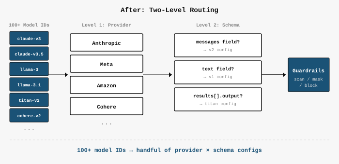
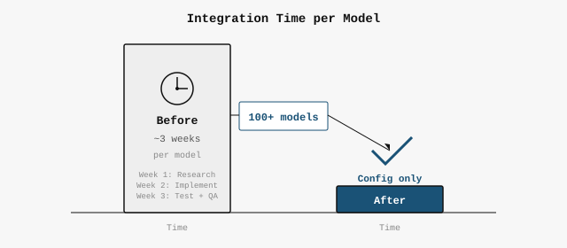

Guardrails for Amazon Bedrock
Redesigned model onboarding from 3-week custom code per model to a config file. Shipped 100+ models across modalities with zero regression for re:Invent 2024.
Problem
Each new model onboarded to Guardrails required custom integration code — handling its specific request/response format, modality (text, image, video), and API contract. Every model took roughly 3 weeks of engineering work, and each modality owner implemented their own adapter logic.
With 100+ foundation models and Bedrock rapidly expanding, this manual approach was unsustainable for the re:Invent 2024 deadline.
Solution

1. Config-Driven Model Onboarding
Redesigned the onboarding flow from custom code per model to a declarative configuration system. Each model's guardrails integration is defined by a config file specifying modality, request/response schema mapping, and policy application points. New models onboard by adding a config entry — no code changes required.
2. Cross-Modality Compatibility
Partnered with text, image, and video modality owners to validate that the config-driven system correctly handles each modality's unique guardrails requirements. Ensured zero-regression across all existing integrations during migration.
Shipping & Launch

Successfully onboarded 100+ models for the re:Invent 2024 launch with zero regressions. The config-driven architecture means future models automatically inherit guardrails support.
Key Metrics
Decoupled the Guardrails console from Bedrock core — achieving release independence and cutting code review cycle time by 50%.
Problem
The Guardrails console code lived inside the core Bedrock console codebase. Every UI change required code review from the core Bedrock team, creating a bottleneck that slowed feature delivery. Merge conflicts between Guardrails and other Bedrock features were frequent.
Solution
Decoupled the Guardrails console into a separate package with its own build and deployment pipeline. Defined clear API boundaries between Guardrails and core Bedrock console code.
Impact
- Code review waiting time cut by 50%
- Merge conflicts eliminated
- Guardrails team owns their release cycle independently
- Scalable architecture for future Bedrock feature teams